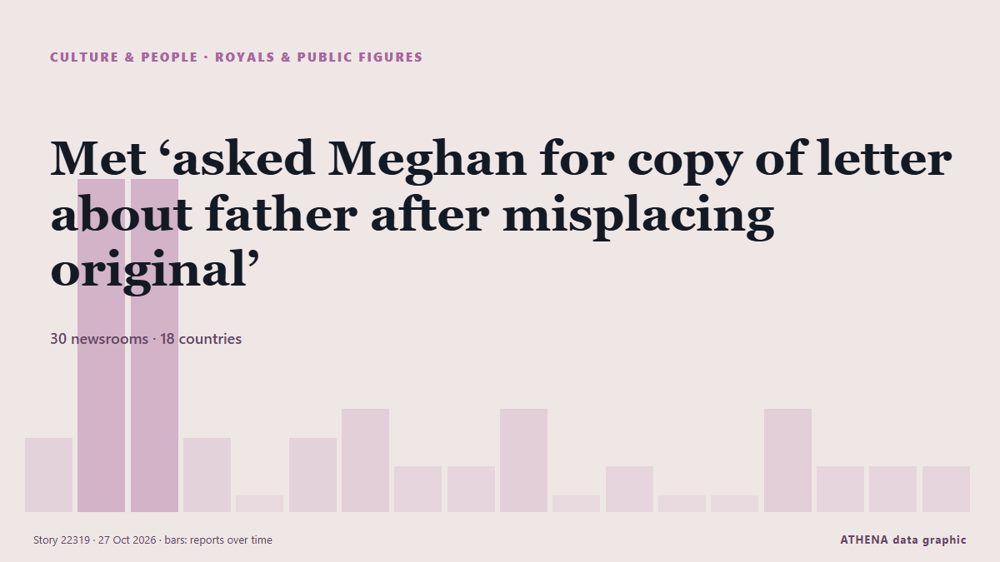

Met ‘asked Meghan for copy of letter about father after misplacing original’

Meghan Markle’s father, Thomas Markle Senior, is reportedly under investigation after his son allegedly discovered child abuse material at his home. από Greek City Times
Αναφέρθηκε ανεξάρτητα από 30 μέσα σε 18 χώρες από τις 23 Οκτ, πρώτο από το Greek City Times· η κάλυψη έχει πλέον ηρεμήσει. Τα αθλητικά και τα πολιτιστικά καταχωρούνται χωρίς εκτίμηση κινδύνου. Η βεβαιότητα είναι 91% (υψηλή), καθώς το επιβεβαιώνουν 30 ανεξάρτητα μέσα με μέση αξιοπιστία πηγών 75%. Ποιοι το ανέφεραν: 9 μέσα στη χώρα Ηνωμένες Πολιτείες · United States, 6 μέσα στη χώρα Ηνωμένο Βασίλειο · United Kingdom, 3 μέσα στη χώρα Νέα Ζηλανδία · New Zealand. Η κάλυψη διήρκεσε από 23 Οκτ έως 26 Οκτ, 89 ώρες.
Τι άλλαξε: 6 νέες αναφορές από 6 μέσα στο 24ωρο έως 27 Οκτ.
Πρώτη διατύπωση: Meghan Markle reacts to "disturbing" child sex abuse accusations against estranged father
Οι τίτλοι των ειδήσεων παρουσιάζονται στα αγγλικά, όπως δημοσιεύτηκαν.
Με μια ματιά
Επιλέγεται, βαθμολογείται και γράφεται από τη δημοσιευμένη μεθοδολογία του ATHENA. Κανένας συντάκτης δεν παρεμβαίνει σε μεμονωμένα γεγονότα. Πώς παράγεται ›
| 23 Oct 00:29 UTC | 2 |
|---|---|
| 23 Oct 06:29 UTC | 11 |
| 23 Oct 12:29 UTC | 11 |
| 23 Oct 18:29 UTC | 2 |
| 24 Oct 00:29 UTC | 0 |
| 24 Oct 06:29 UTC | 2 |
| 24 Oct 12:29 UTC | 3 |
| 24 Oct 18:29 UTC | 1 |
| 25 Oct 00:29 UTC | 1 |
| 25 Oct 06:29 UTC | 3 |
| 25 Oct 12:29 UTC | 0 |
| 25 Oct 18:29 UTC | 1 |
| 26 Oct 00:29 UTC | 0 |
| 26 Oct 06:29 UTC | 0 |
| 26 Oct 12:29 UTC | 3 |
| 26 Oct 18:29 UTC | 1 |
| 27 Oct 00:29 UTC | 1 |
| 27 Oct 06:29 UTC | 1 |
Γιατί αυτοί οι αριθμοί
Σημασία
Κίνδυνος
Βεβαιότητα
Η κάλυψη — ποιος το ανέφερε και πότε
ο τίτλος όπως δημοσιεύτηκε · ανοίγει το πρωτότυπο- Greek City Times · Ελλάδα · GreeceMeghan Markle Father Investigated Over Alleged Child Abuse Material
- Stuff · Νέα Ζηλανδία · New ZealandMeghan Markle’s estranged father investigated over alleged child abuse images
- BBC News · Ηνωμένο Βασίλειο · United KingdomMeghan says she was informed about 'disturbing allegations' against her father in 2018
- Gulf News · Ηνωμένα Αραβικά Εμιράτα · United Arab EmiratesMeghan Markle 'deeply distressed' over child-abuse accusations against father
- The Guardian · Ηνωμένο Βασίλειο · United KingdomDuchess of Sussex ‘deeply distressed’ over child sexual abuse image claims against father
- CBS News (World) · Ηνωμένες Πολιτείες · United StatesMeghan "deeply distressed" as dad faces child abuse material probe
- Gulf News · Ηνωμένα Αραβικά Εμιράτα · United Arab EmiratesPhilippines probes reports of illicit material at Meghan Markle’s father’s home
- ABC News Australia · Αυστραλία · AustraliaMeghan Markle says she was told of 'disturbing' allegations about father in 2018
- ABC News (International) · Ηνωμένες Πολιτείες · United StatesPrince Harry's wife Meghan 'deeply distressed' by allegations about her father
- NBC News (World) · Ηνωμένες Πολιτείες · United StatesMeghan Markle ‘deeply distressed’ by allegations her dad possessed child sexual abuse images
- Stuff · Νέα Ζηλανδία · New ZealandMeghan Markle 'deeply distressed' by allegations her father had indecent images
- Vanguard · Νιγηρία · NigeriaMeghan Markle ‘distressed’ over claims father had child abuse images
- Anadolu Agency (English) · Τουρκία · TurkeyMeghan says she was informed of ‘disturbing allegations’ against estranged father
- The Straits Times · Σιγκαπούρη · SingaporeMeghan Markle ‘distressed’ over claims father had child abuse images
- Bangkok Post — page reader · Ταϊλάνδη · ThailandMeghan ‘distressed’ by reports father had child-abuse images
- The Guardian · Ηνωμένο Βασίλειο · United KingdomAllegations against Thomas Markle Sr challenge media’s Meghan narrative
- IOL · Νότια Αφρική · South AfricaMeghan Markle says allegations against father informed decision to protect her children
- The New York Times (World) · Ηνωμένες Πολιτείες · United StatesMeghan Says She Is ‘Distressed’ by Claim Her Father Kept Child Abuse Images
- The New York Times (World) · Ηνωμένες Πολιτείες · United StatesMeghan Says She Is ‘Distressed’ by Claim Her Father Kept Child Abuse Images
- Global News (World) · Καναδάς · CanadaMeghan Markle ‘deeply distressed’ by child sex abuse image claims against dad
- Indian Express · Ινδία · IndiaMeghan Markle ‘deeply distressed’ over child abuse allegations against father Thomas Markle
- CBS News (World) · Ηνωμένες Πολιτείες · United StatesMeghan Markle reacts to "disturbing" child sex abuse accusations against estranged father
- The Hill · Ηνωμένες Πολιτείες · United StatesMeghan Markle says she’s 'deeply distressed' in response to child pornography allegations against her father
- Punch · Νιγηρία · NigeriaWhy I kept my children away from my father – Meghan
- NDTV · Ινδία · IndiaMeghan Markle 'Distressed' Over Claims Her Father Had Child Abuse Images
- Jamaica Observer · Τζαμάικα · JamaicaMeghan Markle ‘distressed’ over claims father had child abuse images
- ProtoThema English ·Meghan Markle’s father at centre of child sex abuse allegations as disturbing photograph emerges
- Mothership · Σιγκαπούρη · SingaporeMeghan Markle 'deeply distressed' after father allegedly found with child sex abuse material in Philippines home
- CBS News (World) · Ηνωμένες Πολιτείες · United StatesU.K. police confirm it received letter with claims against Meghan's father
- ABC News Australia · Αυστραλία · AustraliaMet Police received letter about Meghan Markle's father in 2019
- Jamaica Observer · Τζαμάικα · JamaicaUK police say ‘claims’ over Meghan Markle’s dad not sent to other law enforcement
- Stuff · Νέα Ζηλανδία · New ZealandMeghan ‘upset’ by failure to act on letter about her father
- CNA (Channel NewsAsia) · Σιγκαπούρη · SingaporePhilippines investigates laptop found at Thomas Markle's former home
- IOL · Νότια Αφρική · South AfricaPhilippines investigates laptop found at Thomas Markle's former home
- The Guardian · Ηνωμένο Βασίλειο · United KingdomSigns suggest Thomas Markle Sr may be ‘sex offender of the grossest kind’, says Philippine minister
- The Irish News (Belfast) · Ηνωμένο Βασίλειο · United KingdomMeghan ‘told father I know you’re an abuser, you’ll never see the grandchildren’
- The Irish News (Belfast) · Ηνωμένο Βασίλειο · United KingdomMeghan’s father may be ‘sex offender of grossest kind’, Philippine official says
- CBS News (World) · Ηνωμένες Πολιτείες · United StatesDuchess Meghan confronted dad over child abuse claims last year
- Taipei Times · Ταϊβάν · TaiwanThomas Markle Sr probed over ‘child sex abuse images’
- Irish Examiner · Ιρλανδία · IrelandTerry Prone: Hidden dread over allegations against father cast Meghan Markle's image in new light